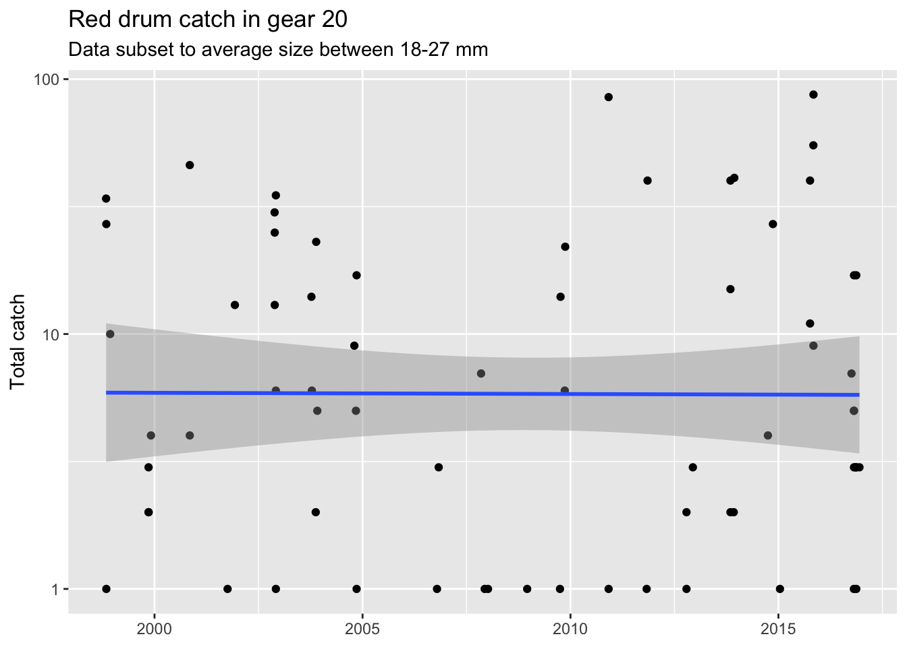
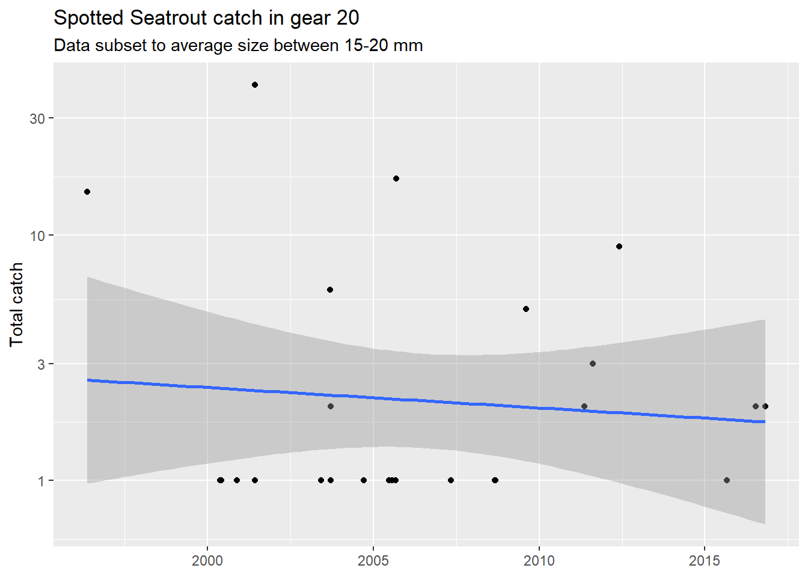
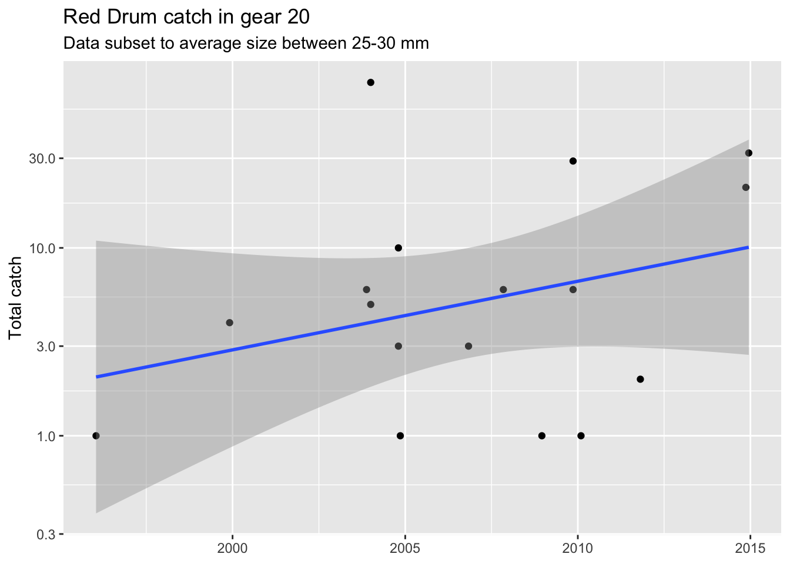

Full disclaimer: Much of this content was pillaged from the wonderful text R for Data Science (https://r4ds.had.co.nz/), specifically chapter 19. Also check out the functions chapter from Advanced R (http://adv-r.had.co.nz/).
Let’s start fresh with a new project in RStudio.
Open RStudio and click “New project…” under the File menu
Name that project something simple like “functions_practice”
Once the project is created, open a new script from the file menu (or Ctrl/Cmd + Shift + N)
At the top of the script, write some informative stuff so you know what it’s for:
# Learning about functions in R
# Created March 10, 2020
# FWRI R club
library(tidyverse)Save the script with an informative name, e.g., 01_functions.R
Use this project to follow along or take notes!
Have you ever found yourself copying/pasting the same lines of code over and over for repeated tasks? Consider the following (bad) example. We start by creating a tibble object of random observations.
dat <- tibble::tibble(
a = rnorm(100),
b = rnorm(100),
c = rnorm(100),
d = rnorm(100)
)Suppose we want to modify the columns somehow:
dat$a <- (dat$a - min(dat$a, na.rm = TRUE)) / (max(dat$a, na.rm = T) - min(dat$a, na.rm = T))
dat$b <- (dat$b - min(dat$b, na.rm = TRUE)) / (max(dat$b, na.rm = T) - min(dat$b, na.rm = T))
dat$c <- (dat$b - min(dat$c, na.rm = TRUE)) / (max(dat$c, na.rm = T) - min(dat$c, na.rm = T))
dat$d <- (dat$c - min(dat$d, na.rm = TRUE)) / (max(dat$d, na.rm = T) - min(dat$d, na.rm = T))What does the above code do to the dat object? Why is this problematic?
We can improve this workflow by using a function for the repeated tasks. Here we write a function called rescale_fun() and use it to rescale each column. Now the working parts of the code are only in one spot.
rescale_fun <- function(x) (x - min(x, na.rm = TRUE)) / (max(x, na.rm = T) - min(x, na.rm = T))
dat$a <- rescale_fun(dat$a)
dat$b <- rescale_fun(dat$b)
dat$c <- rescale_fun(dat$c)
dat$d <- rescale_fun(dat$d)Much better, yes? We can take this one step further with the mutate_all() function from dplyr. This applies the function to every column in the dataset.
dat <- mutate_all(dat, rescale_fun)Functions can help you!
There are differing opinions about when a function should be written. As a general rule, consider writing a function if you repeat a block of code more than twice. This follows the DRY principle of Don’t Repeat Yourself. Side note, this contrasts with the “WET” principle of “write everything twice”, “we enjoy typing”, or “waste everyone’s time”.
There are three steps to writing a function:
What are the elements of the following function?
add_one <- function(x){
x + 1
}All functions have the same format. They are objects you create by choosing a name and assigning the function to that name (i.e., with the assignment operator, <-). Names should be chosen to be descriptive for what the function does - the shorter the better, but don’t sacrifice clarity for brevity. The arguments are included inside the function() and the body of the function is enclosed within the brackets.
Think of the body of the function as it’s own mini environment (or a workspace within a workspace). Anything you put within the body can only use what’s defined by the arguments, or conversely, anything in your global environment is not recognized by the function unless explicitly used in an argument.
Here’s an example that sheds some light on the function environment.
add_one(x = 2)## [1] 3Works as intended… but when we try to add something to the function that’s not defined by the arguments:
a <- 1
add_one(x = 2, a)#> Error in add_one(x = 2, a) : unused argument (a)Or we try to include something in the body that’s not in the arguments:
add_one <- function(x){
x + 1 + a
}
add_one(2)#> Error in add_one(2) : object 'a' not foundNote: You don’t always have to name the arguments when using a function, i.e., add_one(x = 2) vs. add_one(2). For simplicity, you can omit the argument name but this can sometimes be confusing or lead to accidents if there are multiple arguments.
Let’s think about a more practical example of how functions can improve your workflow. We can work with the FWC Fisheries Independent Monitoring dataset. For this example, I’ve created a subset of the data for the Old Tampa Bay area. You can import the data as follows.
url <- 'https://raw.githubusercontent.com/tbep-tech/tbep-r-training/013432d6924d278a9fbb151591ddcfd5b7de87ab/data/otbfimdat.csv'
otbfimdat <- read.csv(url, stringsAsFactors = F)Let’s say we want to plot catch of red drum over time. The slot limit for this species is not less than 18" or more than 27", so maybe we want to subset the data within this range to evaluate effectiveness of the regulation.
Here’s a typical workflow for how we could wrangle the data and then plot a time series of total catch.
subdat <- otbfimdat %>%
filter(Commonname %in% 'Red Drum') %>%
filter(avg_size > 18 & avg_size < 27) %>%
mutate(Sampling_Date = as.POSIXct(Sampling_Date, format = '%Y-%m-%d %H:%M:%S', tz = 'America/New_York'))We also know that not all sampling gear are created equally. How many records do we have for each gear type?
table(subdat$Gear)##
## 20 300
## 69 4According to the metadata, gear “20” is a 21.3-m seine. Let’s subset the data by this gear type since it has the most records.
subdat <- subdat %>%
filter(Gear %in% 20)Now let’s plot the data with ggplot. We create a simple plot of total number (as points) over time. We also change the scale of the axis to log-scale for clarity and add a smooth line to identify a general trend. We also add/modify the labels for context.
p1 <- ggplot(subdat, aes(x = Sampling_Date, y = TotalNum)) +
geom_point() +
scale_y_log10() +
geom_smooth(method = 'lm') +
labs(
x = NULL,
y = 'Total catch',
title = "Red drum catch in gear 20",
subtitle = "Data subset to average size between 18-27 inches"
)
p1
Not a very interesting story here. Let’s look at another species. The slot limit for spotted sea trout is within 15 and 20 inches.
subdat <- otbfimdat %>%
filter(Commonname %in% 'Spotted Seatrout') %>%
filter(avg_size > 15 & avg_size < 20) %>%
filter(Gear %in% 20) %>%
mutate(Sampling_Date = as.POSIXct(Sampling_Date, format = '%Y-%m-%d %H:%M:%S', tz = 'America/New_York'))
p2 <- ggplot(subdat, aes(x = Sampling_Date, y = TotalNum)) +
geom_point() +
scale_y_log10() +
geom_smooth(method = 'lm') +
labs(
x = NULL,
y = 'Total catch',
title = "Spotted Seatrout catch in gear 20",
subtitle = "Data subset to average size between 15-20 inches"
)
p2 
What’s the potential problem with this workflow? How can we make it better?
Let’s write a function to automate the data wrangling and plotting. Where do we start to write our function?
It’s often helpful to work backwards and identify the parts of this workflow that might change depending on when the data change or when your needs for reporting/summarizing the data change. Some arguments could include:
We start with writing the skeleton of the function.
plotcatch <- function(name, szrng, gearsel){}What else is missing? Remember, the function acts as a mini-environment, so you want to include the required data as input.
plotcatch <- function(name, szrng, gearsel, datin){}Now we add the body. We’ll need to “generalize” the places in the code where the arguments are added (i.e., replace specific names with the argument names). This happens in the workflow for creating subdat, but also note what we’ve done for the plot labels.
plotcatch <- function(name, szrng, gearsel, datin){
subdat <- datin %>%
filter(Commonname %in% name) %>%
filter(avg_size > szrng[1] & avg_size < szrng[2]) %>%
filter(Gear %in% gearsel) %>%
mutate(Sampling_Date = as.POSIXct(Sampling_Date, format = '%Y-%m-%d %H:%M:%S', tz = 'America/New_York'))
p <- ggplot(subdat, aes(x = Sampling_Date, y = TotalNum)) +
geom_point() +
scale_y_log10() +
geom_smooth(method = 'lm') +
labs(
x = NULL,
y = 'Total catch',
title = paste0(name, " catch in gear ", gearsel),
subtitle = paste0("Data subset to average size between ", szrng[1], '-', szrng[2], " inches")
)
p
}Now we can use our function!
plotcatch('Red Drum', c(25, 30), 20, otbfimdat)
You can also include some default values for the arguments. These will help you (and others) understand the format of the required inputs and not require each argument to be used if the inputs don’t change.
plotcatch <- function(name = 'Red Drum', szrng = c(18, 27), gearsel = 20, datin = otbfimdat){
subdat <- datin %>%
filter(Commonname %in% name) %>%
filter(avg_size > szrng[1] & avg_size < szrng[2]) %>%
filter(Gear %in% gearsel) %>%
mutate(Sampling_Date = as.POSIXct(Sampling_Date, format = '%Y-%m-%d %H:%M:%S', tz = 'America/New_York'))
p <- ggplot(subdat, aes(x = Sampling_Date, y = TotalNum)) +
geom_point() +
scale_y_log10() +
geom_smooth(method = 'lm') +
labs(
x = NULL,
y = 'Total catch',
title = paste0(name, " catch in gear ", gearsel),
subtitle = paste0("Data subset to average size between ", szrng[1], '-', szrng[2], " inches")
)
p
}What are some other ways we can improve this function?
RStudio has a useful feature that might help you write functions. The “Extract Function” shortcut (under the Code menu, or Ctrl/Cmd + Alt + X) can create a function by identifying the arguments and body in a block of code. It works pretty well for simple examples and kind of well for more complex examples.
A simple example:
x + 1Using the extract function shortcut (select text, then hit Ctrl/Cmd + Alt + X):
addone <- function(x) {
x + 1
}Our example:
subdat <- otbfimdat %>%
filter(Commonname %in% 'Spotted Seatrout') %>%
filter(avg_size > 15 & avg_size < 20) %>%
filter(Gear %in% 20) %>%
mutate(Sampling_Date = as.POSIXct(Sampling_Date, format = '%Y-%m-%d %H:%M:%S', tz = 'America/New_York'))
p <- ggplot(subdat, aes(x = Sampling_Date, y = TotalNum)) +
geom_point() +
scale_y_log10() +
geom_smooth(method = 'lm') +
labs(
x = NULL,
y = 'Total catch',
title = "Spotted Seatrout catch in gear 20",
subtitle = "Data subset to average size between 15-20 inches"
)
p Using the extract function shortcut - not so good, but we can clean it up by hand with minimal effort.
plotcatch <- function(otbfimdat, Commonname, avg_size, Gear, Sampling_Date, TotalNum) {
subdat <- otbfimdat %>%
filter(Commonname %in% 'Spotted Seatrout') %>%
filter(avg_size > 15 & avg_size < 20) %>%
filter(Gear %in% 20) %>%
mutate(Sampling_Date = as.POSIXct(Sampling_Date, format = '%Y-%m-%d %H:%M:%S', tz = 'America/New_York'))
p <- ggplot(subdat, aes(x = Sampling_Date, y = TotalNum)) +
geom_point() +
scale_y_log10() +
geom_smooth(method = 'lm') +
labs(
x = NULL,
y = 'Total catch',
title = "Spotted Seatrout catch in gear 20",
subtitle = "Data subset to average size between 15-20 inches"
)
p
}Once you get comfortable the tendency is to write more complex functions that accomplish multiple tasks (automate all the things!). Although this can be fun for a while, you’ll quickly find that complexity is difficult to manage and not easily generalizable. What defines how much a function should do and when should functions be split?
The short answer is that one function does one task. The long answer is that you’ll get a sense for what’s manageable within the scope of a function the more functions you write to automate your workflows. To start, try to think about the purpose of why you’re writing a function. Although exceptions may arise for how data could or should be processed within a function, reminding yourself of why you wanted to create a function in the first place should help with defining the limits of what it does.
R for Data Science (https://r4ds.had.co.nz/), chapter 19
Advanced R (http://adv-r.had.co.nz/), functions